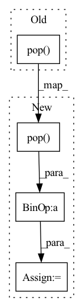

Pattern ID :596
Before Change
x = self.mid_block2(x, t, c)
for init_block, resnet_blocks, attn_block, upsample in self.ups:
x = torch.cat((x, hiddens.pop() ), dim = 1)
x = init_block(x, t, c)
for resnet_block in resnet_blocks:After Change
for init_block, resnet_blocks, attn_block, upsample in self.ups:
skip_connection = hiddens.pop() * self.skip_connect_scale
x = torch.cat((x, skip_connection), dim = 1)
x = init_block(x, t, c)
for resnet_block in resnet_blocks:In pattern: SUPERPATTERN
Frequency: 3
Non-data size: 4
Instances Fragment ID: 2251829
Project Name: lucidrains/imagen-pytorch
Commit Name: 67afe27f5be4c3c37dd07c60df61e4d0b565697d
Time: 2022-06-26
Author: lucidrains@gmail.com
File Name: imagen_pytorch/imagen_pytorch.py
M Class Name: Unet
N Class Name: Unet
M Method Name: forward(3)
N Method Name: forward(3)
M Parent Class: nn.Module
N Parent Class: nn.Module
M File Name: imagen_pytorch/imagen_pytorch.py
N File Name: imagen_pytorch/imagen_pytorch.py
M Start Line: 1460
M End Line: 1460
N Start Line: 1451
N End Line: 1453
Before Change
for layer in self.ups:
if isinstance(layer, ResnetBlocWithAttn):
x = layer(torch.cat((x, feats.pop() ), dim=1), t)
else:
x = layer(x)
After Change
idx = 0
for layer in self.ups:
info = feats.pop()
if idx >= self.skip_start:
x = layer(x+ info, noise_embed)
else:
x = layer(x, noise_embed)
idx += 1 Fragment ID: 2251832
Project Name: janspiry/image-super-resolution-via-iterative-refinement
Commit Name: 12c2447fe9d989a51a1674b23fbb225c783186e5
Time: 2021-08-03
Author: lw_jiang@foxmail.com
File Name: model/modules/unet.py
M Class Name: UNet
N Class Name: UNet
M Method Name: forward(3)
N Method Name: forward(3)
M Parent Class: nn.Module
N Parent Class: nn.Module
M File Name: model/modules/unet.py
N File Name: model/modules/unet.py
M Start Line: 303
M End Line: 325
N Start Line: 241
N End Line: 255
Before Change
for layer in self.ups:
if isinstance(layer, ResnetBlocWithAttn):
x = layer(torch.cat((x, feats.pop() ), dim=1), t)
else:
x = layer(x)
After Change
idx = 0
for layer in self.ups:
info = feats.pop()
if idx >= self.skip_start:
x = layer(x+ info, noise_embed)
else:
x = layer(x, noise_embed)
idx += 1 Fragment ID: 2251833
Project Name: janspiry/image-super-resolution-via-iterative-refinement
Commit Name: e4bf6add27ee36067514a0b3debcd3bf98dbaa17
Time: 2021-08-03
Author: jiangliangwei@tetras.com
File Name: model/modules/unet.py
M Class Name: UNet
N Class Name: UNet
M Method Name: forward(3)
N Method Name: forward(3)
M Parent Class: nn.Module
N Parent Class: nn.Module
M File Name: model/modules/unet.py
N File Name: model/modules/unet.py
M Start Line: 303
M End Line: 325
N Start Line: 241
N End Line: 255